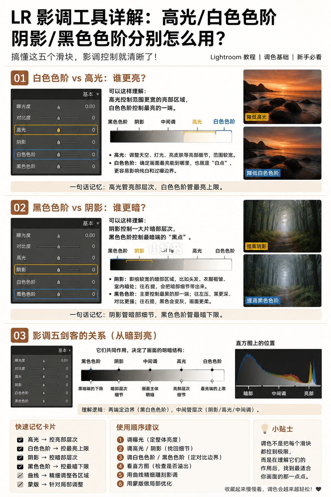

图文实录 · 小红书 · 敖舜
高光管层次，白色色阶管上限
Lightroom 里高光和白色色阶都动亮部，阴影和黑色色阶都动暗部。差别是一块管一片区域的层次，一块管最亮或最暗那条边。
1/1
两端定边界，中间管层次
高光管的是比较宽的亮部：天空、灯光、亮皮肤。白色色阶定画面最亮能到哪里，也就是白点，它决定亮部会不会顶出去。图上的对比是：压高光，夕阳云层还留着层次；压白色色阶，最亮的那一段整体变弱。
阴影管比较宽的暗部：头发、衣服褶皱、室内暗处。往上拉是把暗处细节找回来。黑色色阶管最黑的黑点。往左，黑更深、对比更硬；往右，黑变灰，画面变柔。图上的森林对比是：提阴影，树干纹理更清楚；提黑色色阶，原来的深黑变成灰。
从暗到亮，图把五段排成：黑色色阶、阴影、中间调（曝光）、高光、白色色阶。口诀是两端定边界，中间管层次。记忆卡把高光和阴影归成控层次，把白色和黑色色阶归成控极值，曲线做细调，蒙版做局部。
建议顺序：先曝光，再高光和阴影，再白色和黑色色阶，然后看直方图有没有顶到两头，再用曲线，最后用蒙版。页上写调色不是拉到极限，是找到适合这张图的点。没有给出具体滑块数值。

汇总
先救层次，再定黑白点
亮部要云和灯还在，动高光；要改最亮能到哪，动白色色阶。暗部要纹理，动阴影；要改最黑有多黑，动黑色色阶。顺序和对比都在这一页。这是 Lightroom 基础面板的用法说明，没有覆盖曲线和蒙版的具体参数。